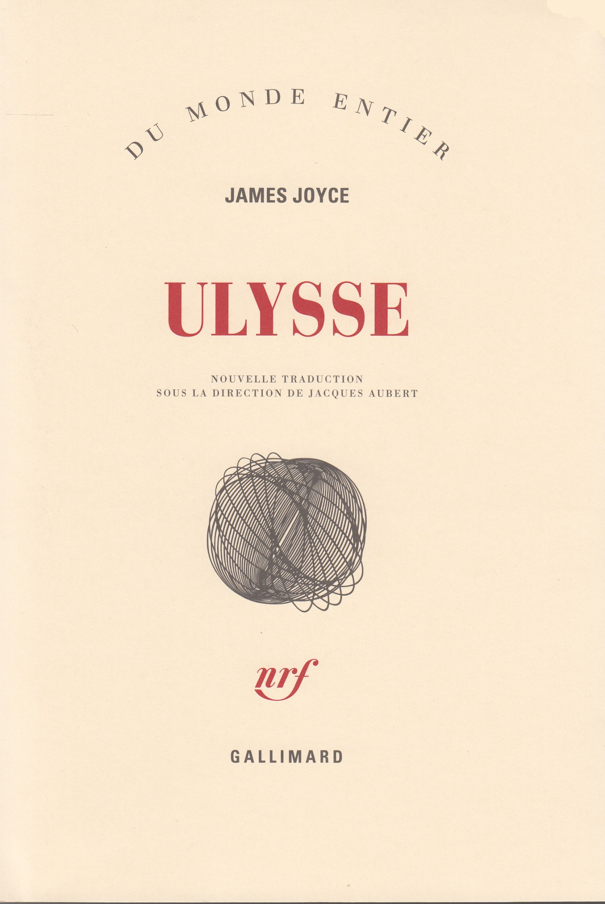
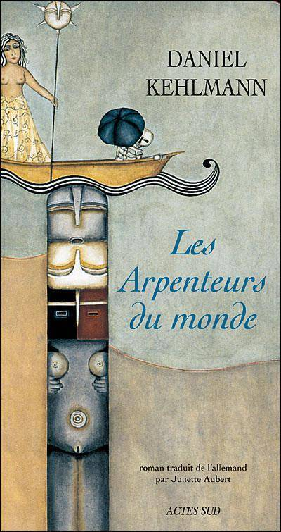

Siglo
#roman-policier
La Dame de Reykjavik
#roman-policier
L'Ile au secret
#roman-policier
La Dernière tempête
#roman-policier
Ce lien entre nous
#roman

Ulysse - Tome 1
#roman
Ulysse - Tome 2
#roman
Le Procès
#roman

Les Arpenteurs du monde
#science-fiction
La Symphonie du hasard - Livre 1
#roman
La Symphonie du hasard - Livre 2
#roman
La Symphonie du hasard - Livre 3
#roman
Piège nuptial
#roman
L'Homme qui voulait vivre sa vie
#roman
Les Désarrois de Ned Allen
#roman
La Poursuite du bonheur
#roman
Rien ne va plus
#roman
Une relation dangereuse
#roman
La Femme du Ve
#roman
Quitter le monde
#roman